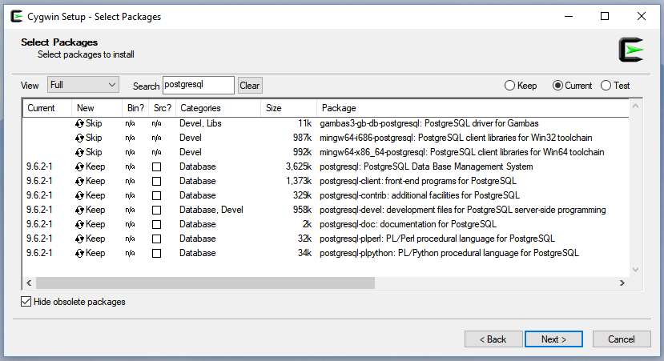
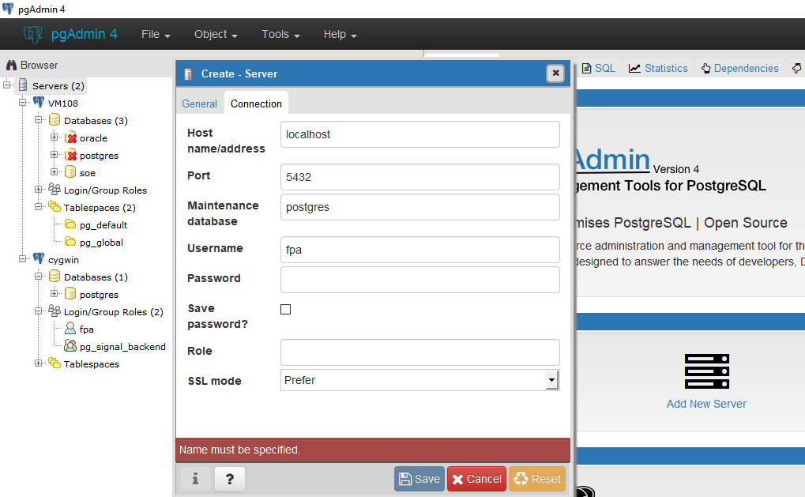
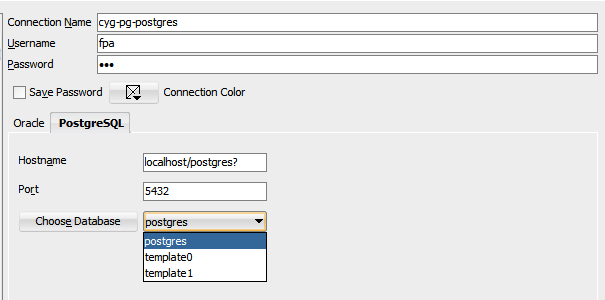
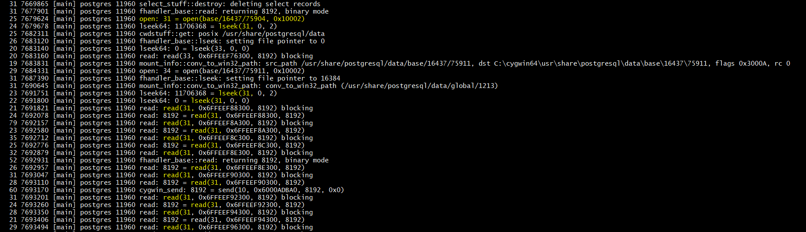

This was first published on https://www.dbi-services.com/blog/postgresql-on-cygwin/ (2017-08-01)
Republishing here for new followers. The content is related to the versions available at the publication date.
.
I run my laptop with Windows 10 for office programs, and VirtualBox machines with Linux for the big stuff (Oracle databases). I have also Cygwin installed on Windows for GNU programs. I wanted to quickly install PosgreSQL and rather than installing it in a Linux VM, or as a Windows program, I installed the Cygwin version of it. Here is how.
Cygwin is easy to install: just run the setup-x86_64.exe from https://www.cygwin.com/ and choose the packages you want to install. Here is what is related to PostgreSQL: 
Note that if you want to install postgres extensions you may need pg_config and you need to install the libpd-devel in addition to postgresql-devel. And gcc and make. Those are not displayed in the screenshot above but you may get something like the following, if you don’t have them, when installing an extension:
pg_config: Command not foundOf course, PostgreSQL is Open Source and you can also compile it yourself.
Cygwin can run daemons through a Windows service (Cygserver) and you need to set it up if not already done. For this step, you will need to run the Cygwin Terminal as Administrator.
fpa@dell-fpa ~
$ /usr/bin/cygserver-config
Overwrite existing /etc/cygserver.conf file? (yes/no) yes
Generating /etc/cygserver.conf file
Warning: The following function requires administrator privileges!
Do you want to install cygserver as service?
(Say "no" if it's already installed as service) (yes/no) yes
The service has been installed under LocalSystem account.
To start it, call `net start cygserver' or `cygrunsrv -S cygserver'.
Further configuration options are available by editing the configuration
file /etc/cygserver.conf. Please read the inline information in that
file carefully. The best option for the start is to just leave it alone.
Basic Cygserver configuration finished. Have fun!
You start this service as any Windows service:
fpa@dell-fpa ~
$ net start cygserver
The CYGWIN cygserver service is starting.
The CYGWIN cygserver service was started successfully.You can check from that the service is running:
fpa@dell-fpa ~
$ cygstart services.msc
Here is the creation of the PostgreSQL database cluster.
fpa@dell-fpa ~
$ /usr/sbin/initdb -D /usr/share/postgresql/data
The files belonging to this database system will be owned by user "fpa".
This user must also own the server process.
The database cluster will be initialized with locale "C".
The default database encoding has accordingly been set to "SQL_ASCII".
The default text search configuration will be set to "english".
Data page checksums are disabled.
creating directory /usr/share/postgresql/data ... ok
creating subdirectories ... ok
selecting default max_connections ... 30
selecting default shared_buffers ... 128MB
selecting dynamic shared memory implementation ... posix
creating configuration files ... ok
running bootstrap script ... ok
performing post-bootstrap initialization ... ok
syncing data to disk ... ok
WARNING: enabling "trust" authentication for local connections
You can change this by editing pg_hba.conf or using the option -A, or
--auth-local and --auth-host, the next time you run initdb.
Success. You can now start the database server using:
/usr/sbin/pg_ctl -D /usr/share/postgresql/data -l log.txt startI add my network onto the /usr/share/postgresql/data/pg_hba.conf
# IPv4 local connections:
host all all 127.0.0.1/32 trust
host all all 192.168.78.0/24 trustI define the interface and port where the server listen in /usr/share/postgresql/data/postgresql.conf
listen_addresses = 'localhost,192.168.78.1' # what IP address(es) to listen on;
# comma-separated list of addresses;
# defaults to 'localhost'; use '*' for all
# (change requires restart)
port = 5432 # (change requires restart)
max_connections = 30 # (change requires restart)Now ready to start the PostgreSQL server:
fpa@dell-fpa ~
$ /usr/sbin/pg_ctl -D /usr/share/postgresql/data -l log.txt start
server startingMy Windows username is ‘FPA’ and so is the Cygwin user which started the database server and I check that I can connect to the maintenance database with this user:
fpa@dell-fpa ~
$ psql -U fpa postgres
psql (9.6.2)
Type "help" for help.
postgres=# \du
List of roles
Role name | Attributes | Member of
-----------+------------------------------------------------------------+-----------
fpa | Superuser, Create role, Create DB, Replication, Bypass RLS | {}
postgres=# quitAs I am on Windows, I install the graphical console PgAdmin and setup the connection to this database: 
As an Oracle fan, I prefer to connect with SQL Developer. Just download the JDBC driver for PostgreSQL: https://jdbc.postgresql.org/download.html
In SQL Developer you can declare this .jar from Tools -> Preferences -> Third Party JDBC Drivers
And create the connection with the new ‘PostgreSQL’ tab:

Then with ‘Choose Database’ you can fill the dropbox and choose the database you want to connect to.
As I have no database with the same name as the username, I have to mention the database name at the end of the hostname, suffixed with ‘?’ to get the proper JDBC url. And what you put in the dropbox will be ignored. I don’t really know the reason, but this is how I got the correct url.
You can install extensions. For example, I’ve installed pg_hint_plan to be able to hint the access path and join methods.
wget https://osdn.net/dl/pghintplan/pg_hint_plan96-1.2.1.tar.gz
tar -zxvf pg_hint_plan96-1.2.1.tar.gz
cd pg_hint_plan96-1.2.1
make
make install
And I’m now able to load it:
$ psql
psql (9.6.2)
Type "help" for help.
fpa=# load 'pg_hint_plan';
LOAD
You may wonder why I don’t install it directly on Linux. My laptop is on Windows and, of course, I have a lot of VirtualBox VMs. But this doesn’t require to start a VM. 
You may wonder why I don’t install the Windows version? I want to investigate the linux behaviour. And I may want to trace the postgres processes. For example, cygwin has a strace.exe which shows similar output as strace on Linux. Here is the I/O calls from a full table scan (Seq Scan):
I can see that postgres sequential reads are done through one lseek() and sequential 8k read().
This was simple. Just get the pid of the session process:
fpa=# select pg_backend_pid();
pg_backend_pid
----------------
11960
and strace it:
$ strace -p 11960
I’ve done that in about one hour: download, install, setup and write this blog post. Without any virtual machine, you can have a Linux Postgres database server running on Windows.
{kind=link}
{kind=link}
{kind=link}
{kind=link}
{kind=link}
{kind=link}
{kind=link}